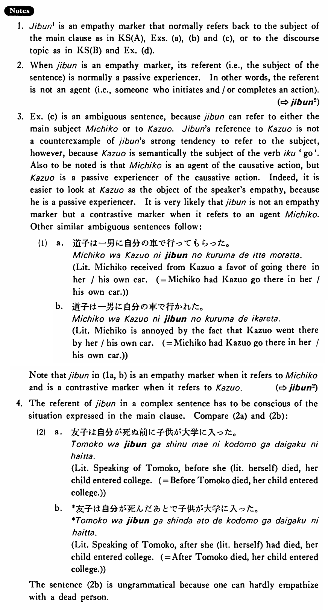

自分・じぶん (1) (B. 159)
- (ksa).
- 土田は幸子が自分を愛していることを知らなかった・知りませんでした。
- Tsuchida didn't know that Sachiko loved him (literally: himself).
- (ksb).
- 1:ゆかりは歩きながら考えていた。 2:健一は自分が本当に好きなんだろうか。
- 1: Yukari was walking while thinking. 2: Does Kenichi really love me (literally: myself)?
- (a).
- 中川は自分が京大に入れると思っていなかった。
- Nakagawa didn't think that he (literally: himself) could enter Kyoto University.
- (b).
- 一郎は冬子が自分に会いに来た時うちにいなかった。
- Ichiro wasn't at home when Fuyuko came to see him (literally: himself).
- (c).
- 道子は一男に自分の車で行かせた。
- Michiko made Kazuo go there in his/her car.
- (d).
- ジョンはメアリーのことを思っていた。彼女は自分と結婚してくれるんだろうか。自分を捨てて、ボブと結婚するんだろうか。
- John was thinking of Mary. Is she going to marry me (literally: myself)? Is she going to leave me (literally: myself) and marry Bob?
